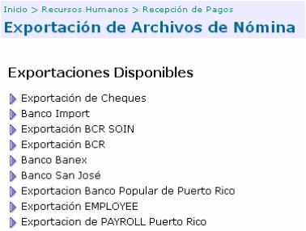
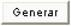
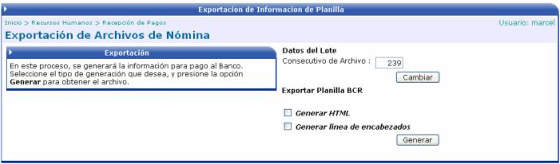
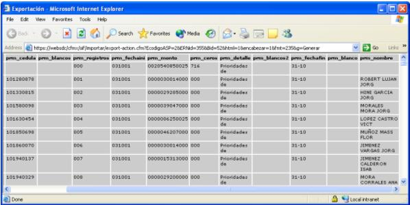
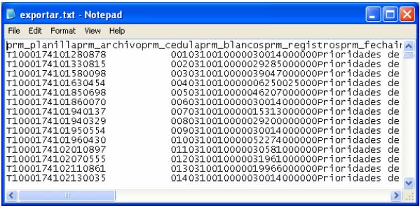

En este proceso se generará la información de pago al Banco. Con la información obtenida en este procedimiento, el Banco procederá a ejecutar el pago correspondiente a cada empleado.
La lista de Exportaciones Disponibles que se presenta en esta pantalla es la que se crea en la opción Formatos de Exportación que se explicará mas adelante en el siguiente capítulo de este manual.

Se debe de escoger la exportación deseada y a continuación asociarle la nómina a la que se quiere realizar la extracción de información. Una vez realizado lo anterior, se selecciona el formato de la exportación, en HTLM (si se activa el check) o en un archivo de texto txt (si no se activa el check) y presionar el botón

para obtener el archivo y mandarlo al Banco respectivo.

Formato HTML:

Formato TXT:
